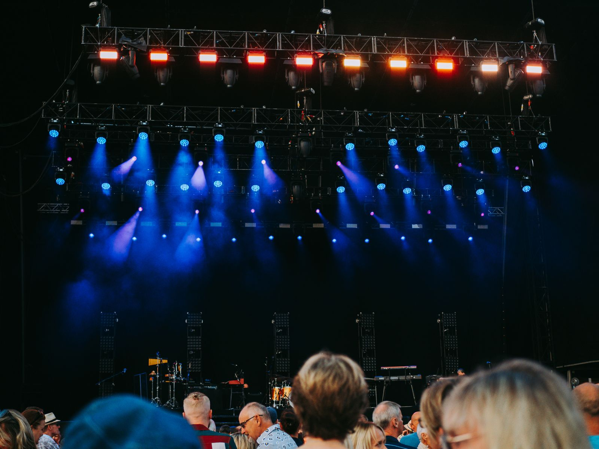

Kaveri Riverfest 2025 — the 16 kW stage
COMPLETE · 3 NIGHTSTHE BRIEF
A three-night river festival, roughly 25,000 people a night, and one 63-amp three-phase distro to run everything: my rig, the sound system, site services and the headliner's backline. The headliner brought their own LD for their set; every other act, and the whole architecture of the night, was mine. The festival's one condition was printed in the contract: the show does not trip. Ever.
THE DECISIONS
The power budget was drawn before the plot: of ≈41 kW available, sound took 8, site services 6, backline 5, and 6 stayed as a reserve the festival would not negotiate — leaving 16.0 kW for light (Table P1 on the desk page). The front wash went LED instead of tungsten, which bought back roughly 4 kW at full. The tungsten festoons stayed — the festival's look is built on them — but on the filament law they became the plot's buffer: pretty at 70%, nearly free at 30%. Every cue was summed on the load sheet before it was programmed.

THE OUTCOME
Three nights, eight cues a night, peak load 14,490 W — 91% of budget, never over. The distro log the site electrician kept is the review I care about: the festival director's words are on the desk page, attached to this file. The plot, the cue sheet on the home page of this site, is this production's actual paperwork, rebuilt as a working model.